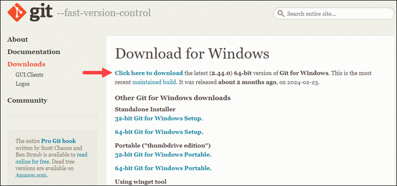
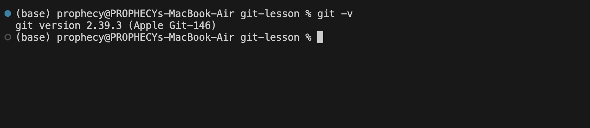

Learn how to manage repository with Git. Pushing new changes onto
project remotely and dynamically. Ability to save changes from multiple
sources making it incredibly suitable to work with developers on the
same project.
Pre Requisite for this lesson:
Installing Git
1. Navigate to the
official Git downloads page
and click the download link for the latest Git version for Windows:

2. Click the downloaded file to extract and launch the installer. Review
the GNU General Public License, and when you are ready to install, click
Next.
3. The installer prompts you for an installation location. Leave the
default one unless you want to change it, and click Next.
4. In the component selection screen, leave the defaults unless you need
to change them and click Next.
5. The installer offers to create a start menu folder. Click Next to
accept and proceed to the next step.
6. Leave the default text editor to VIM and click Next.
7. Choose Let Git decide for adjusting name of initial branch. Click
Next
8. The next step allows you to change the PATH environment. The PATH is
the default set of directories included when you run a command from the
command line. Keep the middle (recommended) selection and click Next.
9. The installer prompts you to select the SSH client for Git to use.
Git already comes with its own SSH client, so if you don't need a
specific one, leave the default option and click Next.
10. The next option relates to server certificates. Select your
preferred option and click Next.
11. The following selection configures line-ending conversion, which
relates to the way data is formatted. The default selection is
recommended for Windows. Click Next to proceed.
12. Choose the terminal emulator you want to use. The default MinTTY is
recommended for its features. Click Next to continue.
13. The next step allows you to choose what the git pull command will
do. The default option is recommended unless you specifically need to
change its behavior. Click Next to continue with the installation.
14. The next step is to choose which credential helper to use. Git uses
credential helpers to fetch or save credentials. The default option is
the most stable one. Select your preferred credential manager and click
Next.
15. The next step lets you decide which extra options to enable. If you
use symbolic links, which represent shortcuts for the command line, tick
the box. Keep file system caching checked and click Next.
16. For the most stable operation, do not install experimental features
and click Install.
17. Once the installation is complete, tick the boxes to view the
Release Notes or launch Git Bash if you want to start using Git right
away, and click Finish.
Basic Git Commands
1. Open your terminal or cmd. To Check if Git is installed type "git -v"
git -v

2. To create a Git repository locally. From your terminal / CMD change
directory to your project and type "git init". Alternatively with VSCode
you can open console directly into your project directory.
To Show Directory (Windows/CMD):
dir
To Show Directory (MacOS/Linux/Terminal):
ls
To Change Directory:
cd path/to/project-folder
To Create Git Repository (Make sure you are at your project folder!!):
git init
3. Once initialised, you can now add all files from your project folder
to your repository by typing "git add ."
To Add all files from your project folder to your repository
git add .
To Add specific file/folder
git add path/to/file
This stages your files for commit. Thus, allowing you to add or remove
files from your repository before committing.
To unstage all added files that you do not want to commit:
git reset .
To unstage a file that you do not want to commit:
git reset path/to/file
4. To commit all staged files on your current branch, type "git commit
-m "commit message"
git commit -m "commit message"
5. To work on a new branch to work on a seperate feature of the same
project, type "git checkout -b branch-name". "branch-name" can be
anything you want.
git checkout -b branch-name
This will switch the current branch "main" or "master" to your newly
created branch. To switch back to the main branch, type "git checkout
main"
git checkout main
6. To merge a branch into the main branch, make sure to checkout to your
main branch first with "git checkout main" then type "git merge
branch-name"
git checkout main
git merge branch-name
For Guide on remote repository and Github. Check Connecting to Github
For more details on basic git commands operation check out Fireship
video on Git and Github:
2. Once you have an account, you need to configure identity for your
git.
Your identity in Git is your username and email address which Git uses
every time you create a commit. To set up your identity, open Git Bash
and use the syntax below:
git config --global user.name "[username]"
Replace [user_name] with the actual username you will use. If you have a
GitHub account, you can use that username and email.
git config --global user.email [email]
You will be asked to authenticate your GitHub account, so just sign in
with the same email to confirm.